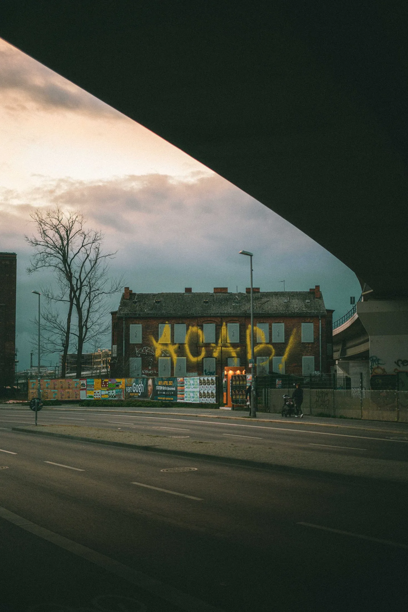
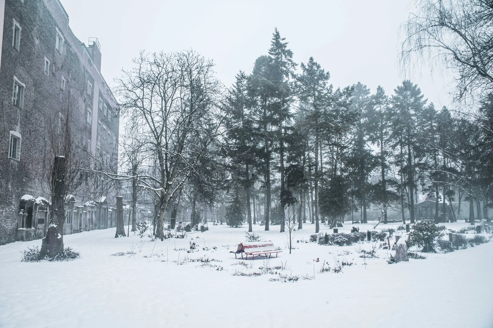
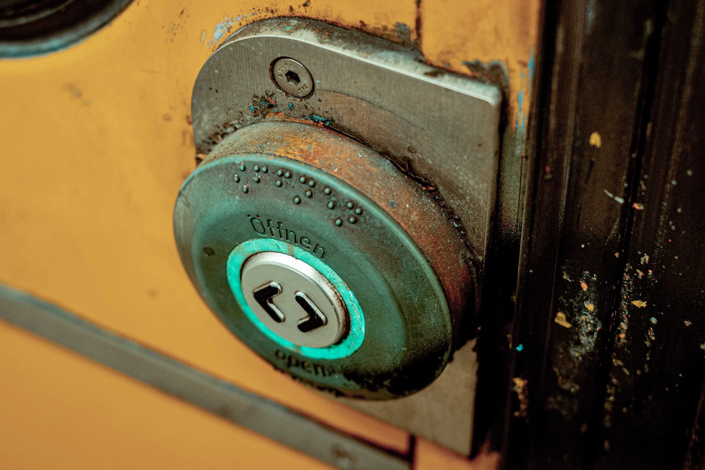
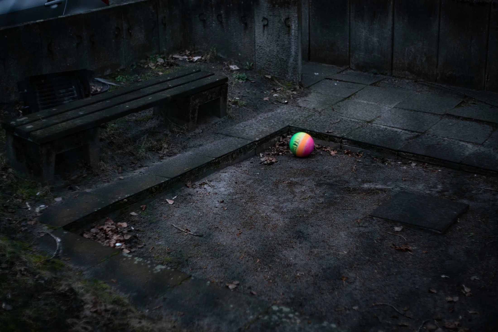
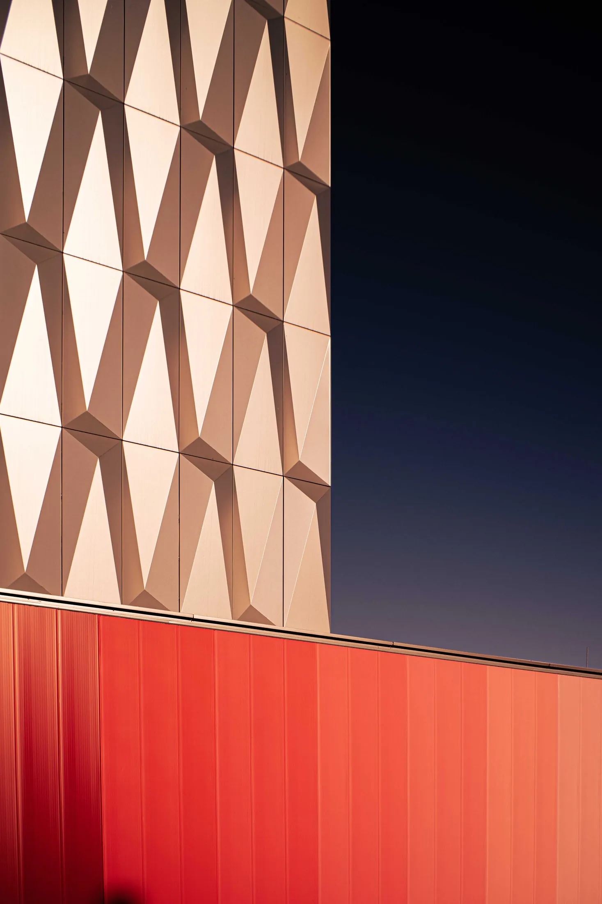
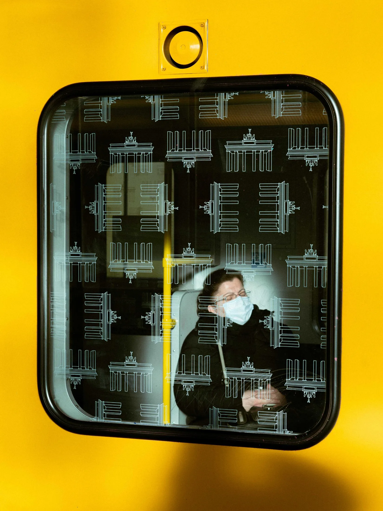
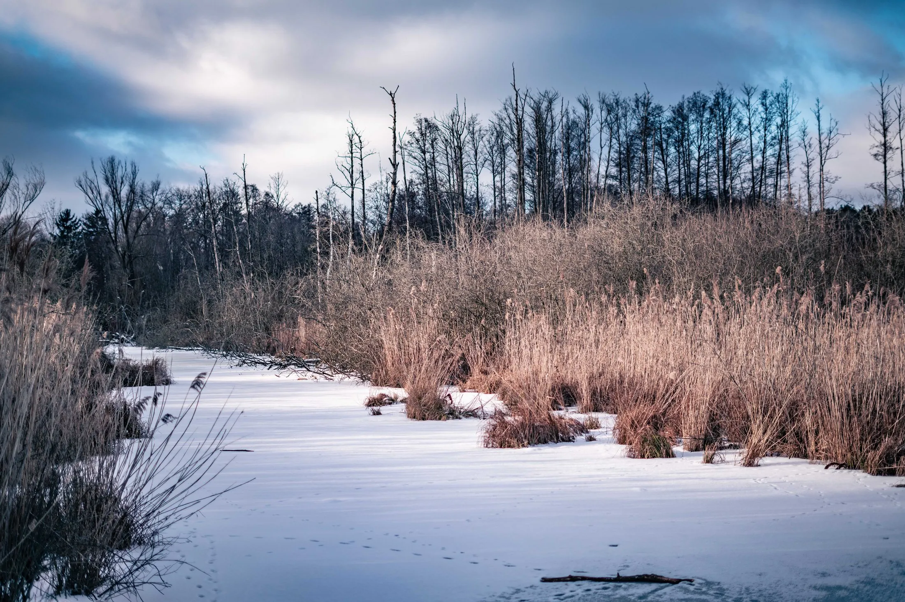
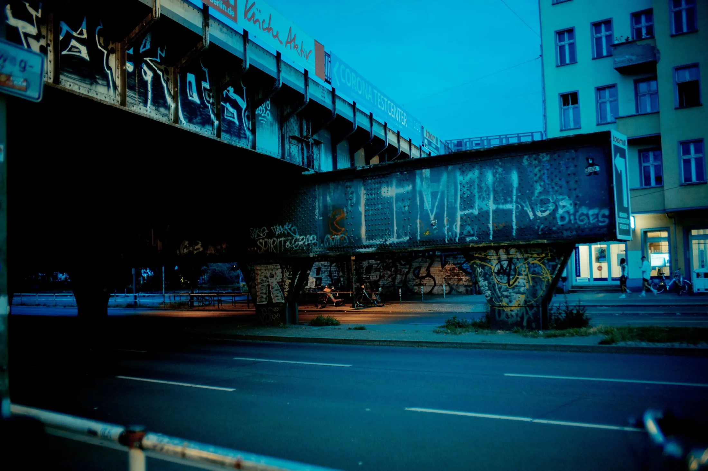
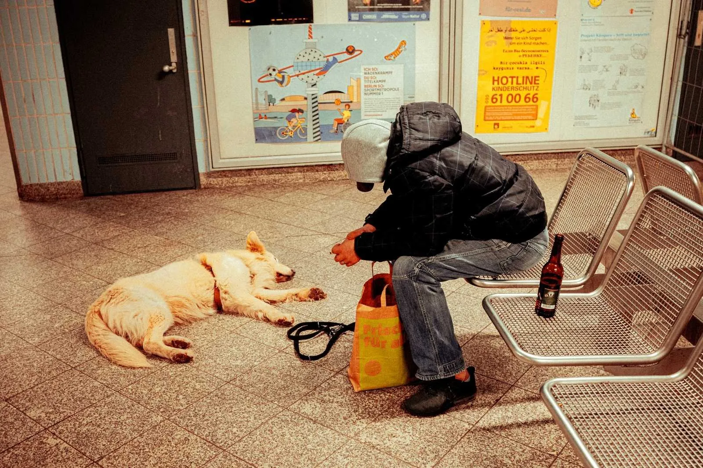
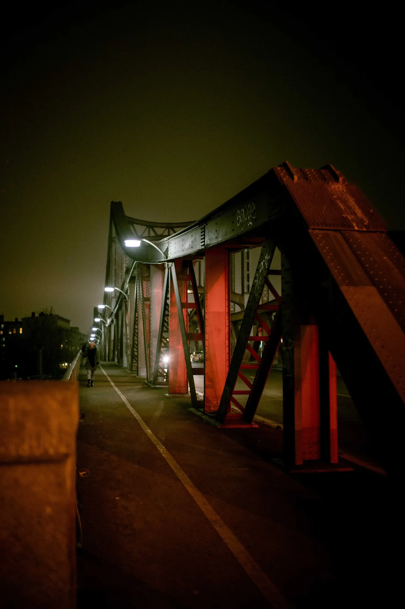
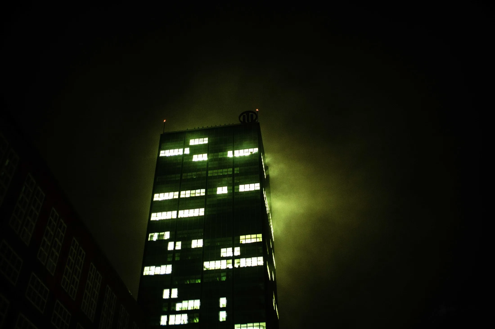
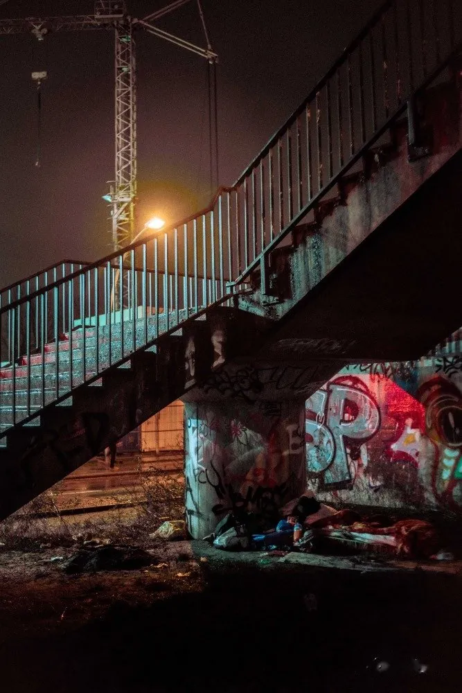
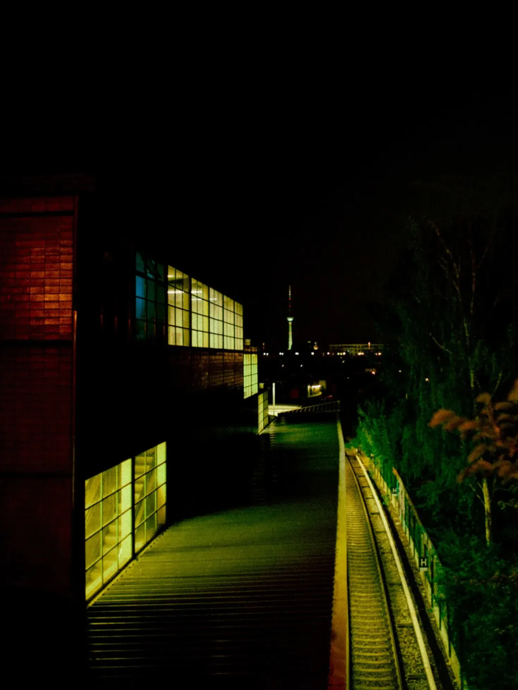
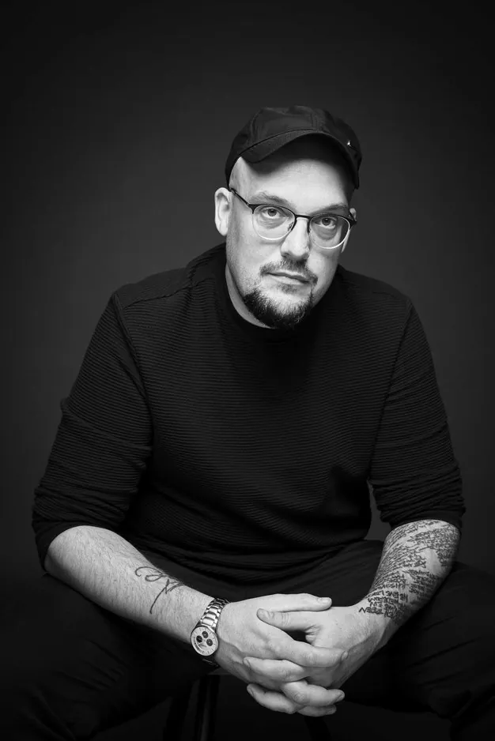
Ich bin Dustin, Jahrgang 1984 – seit jeher zuhause in dieser Stadt, die bis heute meine wichtigste Inspirationsquelle ist.
Seit 1996 bin ich als Graffiti-Sprayer unterwegs, seit fast 25 Jahren halte ich das, was ich sehe, fotografisch fest. Mein Archiv an Graffiti-Fotos zählt zu den größten seiner Art. Irgendwann reichte mir das Bild allein nicht mehr – ich fing an zu filmen, um auch Sound und Licht einzufangen. Das Schneiden habe ich mir selbst beigebracht. Daraus entstanden zahlreiche Musikvideos für unterschiedliche Musiker, unter anderem für MC Bomber und Rokko Weissensee.
Hauptberuflich arbeite ich als Cutter für Kunden wie die Deutsche Bahn und verschiedene Versicherungen, außerdem als Locationscout – nach über 20.000 abgelaufenen Kilometern zu Fuß kennt kaum jemand die Ecken und Kanten so gut wie ich.
Meine künstlerische Arbeit zeigte ich zuletzt in Ausstellungen wie FOURTEX – meiner ersten Arbeit als Kurator – und LIQUID TIMES. Aktuell arbeite ich an MEEN BERLIN – einem Buch mit über 3.300 Fotos auf 500 Seiten, das meinen persönlichen Wandel und den meiner Heimatstadt dokumentiert.
Seit zehn Jahren bin ich unter dem Namen Kevin Schulzbus bekannt.